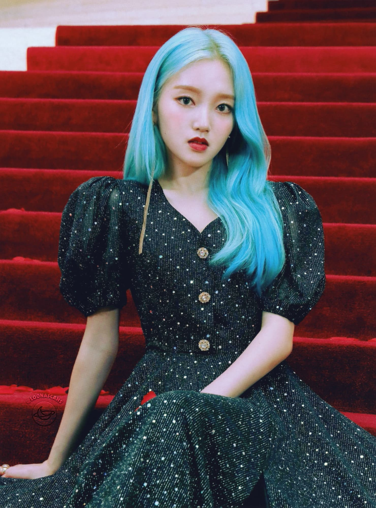

Go Won is the eleventh member of Loona. She debuted on January 15, 2018 as a member, and released her solo single album "Go Won" on January 30, 2018.
Her first official fan event was with Chuu on February 10, 2018. Her second fan event was solo, on February 24, 2018. Go Won's third fan event was held on March 3, 2018, alongside member Chuu. Her fourth event was held alone on April 1, 2018. Go Won's fifth and sixth fan events were held on April 7 and April 21, 2018, both alongside 12th member, Olivia Hye.
Coincidentally with the album release, BlockBerry Creative published a NAVER article featuring Go Won, Yves and Chuu behind the scenes of "One & Only".
| Go Won | |
|---|---|
|  | |
| Full Name | Park Chae-Won (박채원) |
| Birthday | November 19, 2000 (20) |
| Month | February |
| Color | Eden Green |
| Animal | Butterfly |
| Sub-Unit | yyxy |
| Shape | Triangle |
| Zodiac Sign | Scorpio |
| Blood Type | A |
In August 2016, Go Won decided to become an idol after attending Oh My Girl's "Summer Fairy Tale" concert. To train to become an idol, she joined LP Dance & Vocal Academy, specializing in dance. While training under the academy, she participated in a few dance covers and auditioned for Source Music. However, she was not accepted and continued to train under LP Dance & Vocal.
In January 2018, she joined BlockBerryCreative, and debuted as a member on January 15. Before pursuing her dream, Go Won attended Bakmun Girls' High School, but she dropped out in order to focus on training. In an interview with StarNews, she revealed that before joining BlockBerryCreative she had seen previous members' pictures in bus stations and thought, "this is an unusual project." She stated that the "members would be such nice friends," and that she would enjoy being in a group like LOONA. In the same interview, it was revealed she joined the company the same month that her solo song was released, January 2018.
Yves was shown as the one to persuade Go Won to leave Eden, with the help of Chuu. The pair persude Go Won endlessly, chasing and sneaking up on her, as shown in the "One & Only" music video. In the love4eva music video, as the three girls—Yves, Chuu and Go Won escape Eden without Olivia, Go Won is the only one to turn around and look at Olivia, possibly symbolising her hesitation to leave Olivia and Eden. In the name yyxy, new chromosome combinations which signify new DNA, it is stated that Yves, Chuu and Olivia represent the three y's, while Go Won is the x. This can mean that the three are alike, but Olivia is separated from Yves and Chuu by the x, Go Won.
In "Why Not?", Go Won was seen above a hurricane. It is unknown if she summoned it herself, but it is very likely considering the so-called "butterfly effect".